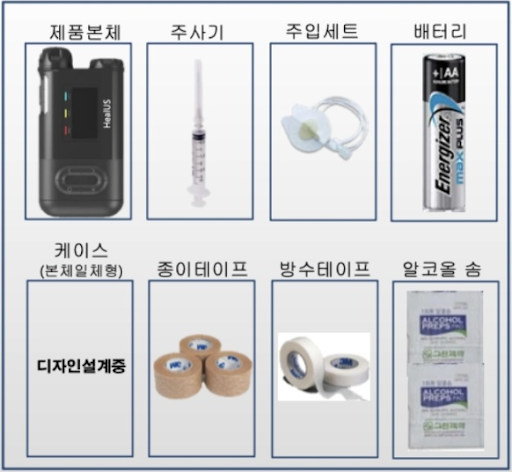
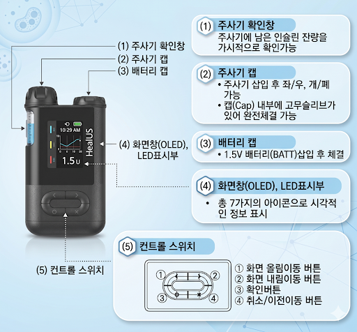

제품의 구성

각 부부의 명칭과 역할

제품사용 유의사항
- 펌프를 분해하거나 내부 부품 손대지 말기
- 펌프에 문제 발생시 일시정지 모드 후 고객센터 문의
- 규격에 맞는 주입세트, 주사기, 소모품 사용
- 버튼 누름 시 날카로운 도구 사용금지
- 보관 및 운송 시 피해야 할 장소
- 주위온도가 0.5도 미만이거나 기압이1060mmHg 이상인 곳
- 습도가 95% 이상인 곳
- 먼지, 염분기가 많은 곳
- 폭발성의 가스에 노출된 곳
- 직사광선에 노출된 곳
- 강한 전자기장이 존재하는 곳에서는 사용불가
- 펌프 사용 전 인슐린 주입에 적절한 양을 담당의사에게 상담 (식사주입, 기초주입 등)
- 주사기와 주입세트는 일회용으로 재사용 불가
- 주사기와 주입세트는 정기적으로 교환 (72시간 이상 사용불가)
장비관리 방법
- 펌프는 1개월에 1회 청소권장
- 청소 시 물이나 중성세제에 적신 헝겊을 사용하고 마른 헝겊으로 마무리 할 것
- 신나 종류와 알코올 같은 강산성 세척제 사용엄금